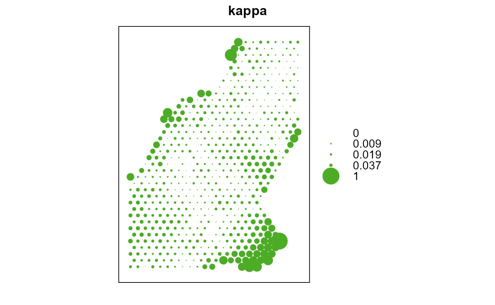

Compares two categorical rasters using Cohen's Kappa (d) or paired t-test statistic(s)
class.comparison( x, y, x.idx = 1, y.idx = 1, d = "AUTO", stat = "kappa", sub.sample = FALSE, type = "hexagon", p = 0.1, size = NULL )
| x | First raster for comparison, SpatialPixelsDataFrame or SpatialGridDataFrame object |
|---|---|
| y | Second raster for comparison, SpatialPixelsDataFrame or SpatialGridDataFrame object |
| x.idx | Index for the column in the x raster object |
| y.idx | Index for the column in the y raster object |
| d | Distance for finding neighbors, the default "AUTO" will derive a distance |
| stat | Statistic to use in comparison ("kappa", "t.test", "both") |
| sub.sample | Should a subsampling approach be employed (FALSE/TRUE) |
| type | If sub.sample = TRUE, what type of sample ("random" or "hexagon") |
| p | If sub.sample = TRUE, what proportion of population should be sampled |
| size | If sub.sample = TRUE, alternate to proportion of population (p), using fixed sample size |
A SpatialPixelsDataFrame or SpatialPointsDataFrame with the following attributes:
x x variable used to derive Kappa (d)
y y variable used to derive Kappa (d)
kappa Kappa (d) statistic
t.test Paired t.test statistic (if stat = "t.test" or "both")
p.value p-value of the paired t.test statistic (if stat = "t.test" or "both")
This function provides a Cohen's Kappa or paired t-test to compare two classified maps. Point based subsampling is provided for computation tractability. The hexagon sampling is recommended as it it good at capturing spatial process that includes nonstationarity and anisotropy.
Cohen, J. (1960). A coefficient of agreement for nominal scales. Educational and Psychological Measurement, 20:37-46
Jeffrey S. Evans <jeffrey_evans@tnc.org>
# \donttest{ library(sp) library(raster) data(meuse.grid) r1 <- sp::SpatialPixelsDataFrame(points = meuse.grid[c("x", "y")], data = meuse.grid) r1@data$class1 <- round(runif(nrow(r1), 1,5),0) r2 <- sp::SpatialPixelsDataFrame(points = meuse.grid[c("x", "y")], data = meuse.grid) r2@data$class2 <- round(runif(nrow(r2), 1,5),0) d <- class.comparison(r1, r2, x.idx = 8, y.idx = 8, stat="both") opar <- par(no.readonly=TRUE) par(mfrow=c(2,2)) plot(raster(d, layer=3), main="Kappa") plot(raster(d, layer=4), main="t.test") plot(raster(d, layer=5), main="t.test p-value") par(opar)# Hexagonal sampling d.hex <- class.comparison(r1, r2, x.idx = 8, y.idx = 8, stat = "both", sub.sample = TRUE, d = 500, size = 1000) sp::bubble(d.hex, "kappa")# }